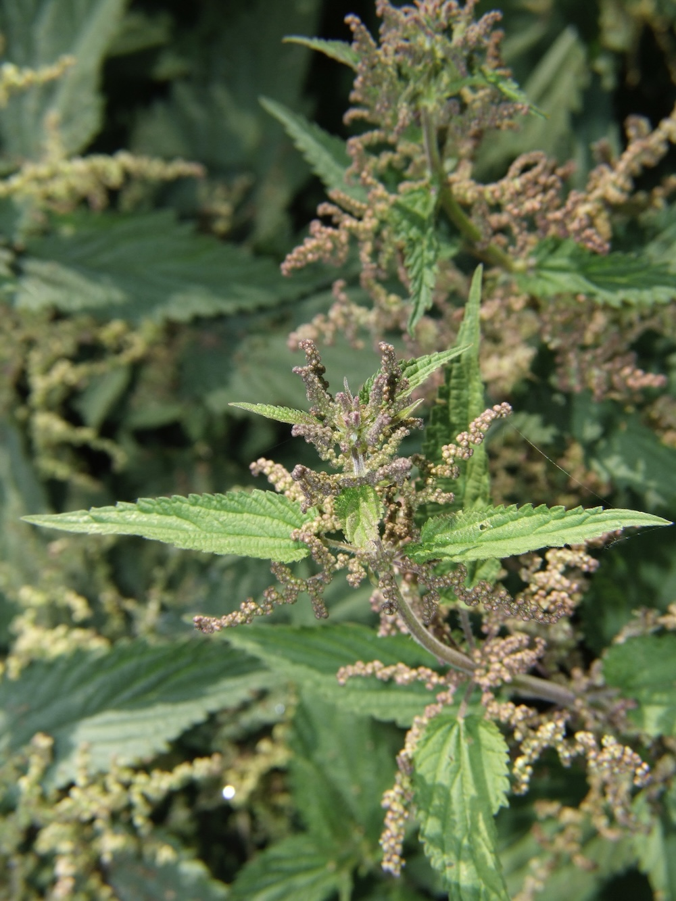

Warum sie brennt
Die Brennhaare auf Blättern und Stängel sind kleine Glasspritzen: Wenn die Spitze abbricht, dringt der Inhalt in die Haut — eine Mischung aus Ameisensäure, Histamin und Acetylcholin. Diese Cocktail-Mischung sorgt für den charakteristischen Brennschmerz und die Quaddeln. Pflanzliche Selbstverteidigung in Perfektion — und ein wichtiges Schutzsystem gegen Tierfraß.
Wildgemüse-Star und Schmetterlings-Kinderzimmer
Die Brennnessel ist eine der wertvollsten Wildpflanzen: eiweißreich (bis 8 % Protein), reich an Eisen, Vitamin C, Mineralstoffen — ein wahres Superfood. Als Spinat-Ersatz, Suppe, Smoothie. Beim Kochen oder Trocknen verschwinden die Brennhaare. Zusätzlich ist sie die wichtigste Raupenpflanze für Tagpfauenauge, Admiral, Kleiner Fuchs und C-Falter — die Schmetterlings-Vielfalt im Garten hängt direkt mit Brennnesseln zusammen.